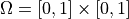
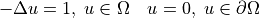

Examples
Solving Poisson’s equation
The easiest way to solve a problem with AMGCL is to use the
amgcl::make_solver class. It has two
template parameters: the first one specifies a preconditioner to use, and the second chooses an iterative solver. The class constructor takes the system matrix in one of supported
formats and parameters for the chosen algorithms and for the
backend.
Let us consider a simple example of Poisson’s equation in a unit square. Here is how the problem may be solved with AMGCL. We will use BiCGStab solver preconditioned with smoothed aggregation multigrid with SPAI(0) for relaxation (smoothing). First, we include the necessary headers. Each of those brings in the corresponding component of the method:
#include <amgcl/make_solver.hpp>
#include <amgcl/solver/bicgstab.hpp>
#include <amgcl/amg.hpp>
#include <amgcl/coarsening/smoothed_aggregation.hpp>
#include <amgcl/relaxation/spai0.hpp>
#include <amgcl/adapter/crs_tuple.hpp>
Next, we assemble sparse matrix for the Poisson’s equation on a uniform
1000x1000 grid. See below for the definition of the poisson
function:
std::vector<int> ptr, col;
std::vector<double> val, rhs;
int n = poisson(1000, ptr, col, val, rhs);
For this example, we select the builtin
backend with double precision numbers as value type:
typedef amgcl::backend::builtin<double> Backend;
Now we can construct the solver for our system matrix. We use the convenient
adapter for std::tuple here and just tie together the matrix size
and its CRS components:
typedef amgcl::make_solver<
// Use AMG as preconditioner:
amgcl::amg<
Backend,
amgcl::coarsening::smoothed_aggregation,
amgcl::relaxation::spai0
>,
// And BiCGStab as iterative solver:
amgcl::solver::bicgstab<Backend>
> Solver;
Solver solve( std::tie(n, ptr, col, val) );
Once the solver is constructed, we can apply it to the right-hand side to obtain the solution. This may be repeated multiple times for different right-hand sides. Here we start with a zero initial approximation. The solver returns a boost tuple with number of iterations and norm of the achieved residual:
std::vector<double> x(n, 0.0);
int iters;
double error;
std::tie(iters, error) = solve(rhs, x);
That’s it! Vector x contains the solution of our problem now.
Input formats
We used STL vectors to store the matrix components in the above axample. This
may seem too restrictive if you want to use AMGCL with your own types. But the
crs_tuple adapter will take anything that the Boost.Range library recognizes
as a random access range. For example, you can wrap raw pointers to your data
into a boost::iterator_range:
Solver solve( boost::make_tuple(
n,
boost::make_iterator_range(ptr.data(), ptr.data() + ptr.size()),
boost::make_iterator_range(col.data(), col.data() + col.size()),
boost::make_iterator_range(val.data(), val.data() + val.size())
) );
Same applies to the right-hand side and the solution vectors. And if that is still not general enough, you can provide your own adapter for your matrix type. See adapters for further information on this.
Setting parameters
Any component in AMGCL defines its own parameters by declaring a param
subtype. When a class wraps several subclasses, it includes parameters of its
children into its own param. For example, parameters for the
amgcl::make_solver<Precond, Solver> are declared as
struct params {
typename Precond::params precond;
typename Solver::params solver;
};
Knowing that, we can easily set the parameters for individual components. For example, we can set the desired tolerance for the iterative solver in the above example like this:
Solver::params prm;
prm.solver.tol = 1e-3;
Solver solve( std::tie(n, ptr, col, val), prm );
Parameters may also be initialized with a boost::property_tree::ptree. This is especially convenient when runtime is used, and the exact structure of the parameters is not known at compile time:
boost::property_tree::ptree prm;
prm.put("solver.tol", 1e-3);
Solver solve( std::tie(n, ptr, col, val), prm );
Assembling matrix for Poisson’s equation
The section provides an example of assembling the system matrix and the right-hand side for a Poisson’s equation in a unit square :

The solution to the problem looks like this:
Here is how the problem may be discretized on a uniform grid:
#include <vector>
// Assembles matrix for Poisson's equation with homogeneous
// boundary conditions on a n x n grid.
// Returns number of rows in the assembled matrix.
// The matrix is returned in the CRS components ptr, col, and val.
// The right-hand side is returned in rhs.
int poisson(
int n,
std::vector<int> &ptr,
std::vector<int> &col,
std::vector<double> &val,
std::vector<double> &rhs
)
{
int n2 = n * n; // Number of points in the grid.
double h = 1.0 / (n - 1); // Grid spacing.
ptr.clear(); ptr.reserve(n2 + 1); ptr.push_back(0);
col.clear(); col.reserve(n2 * 5); // We use 5-point stencil, so the matrix
val.clear(); val.reserve(n2 * 5); // will have at most n2 * 5 nonzero elements.
rhs.resize(n2);
for(int j = 0, k = 0; j < n; ++j) {
for(int i = 0; i < n; ++i, ++k) {
if (i == 0 || i == n - 1 || j == 0 || j == n - 1) {
// Boundary point. Use Dirichlet condition.
col.push_back(k);
val.push_back(1.0);
rhs[k] = 0.0;
} else {
// Interior point. Use 5-point finite difference stencil.
col.push_back(k - n);
val.push_back(-1.0 / (h * h));
col.push_back(k - 1);
val.push_back(-1.0 / (h * h));
col.push_back(k);
val.push_back(4.0 / (h * h));
col.push_back(k + 1);
val.push_back(-1.0 / (h * h));
col.push_back(k + n);
val.push_back(-1.0 / (h * h));
rhs[k] = 1.0;
}
ptr.push_back(col.size());
}
}
return n2;
}